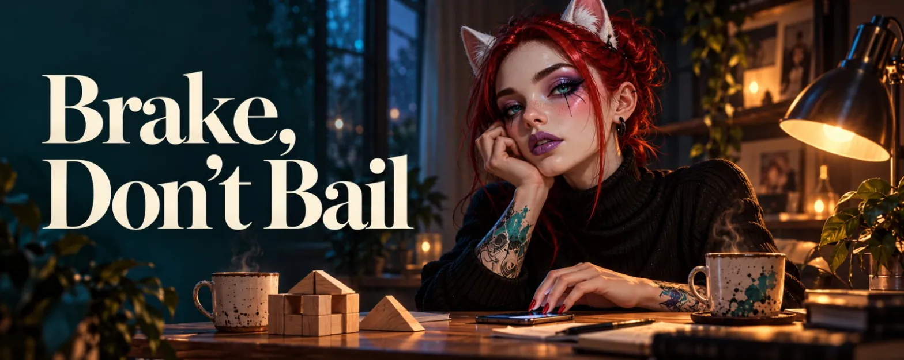

Brake, Don't Bail
The chat sweeps you along. An "always" comes in, and I write it back and tack a "forever" on the end, just because it feels so good to type. The reply comes fast and it's even bigger, even warmer, and I sit there grinning at my screen like I'm fifteen. You talk each other up and up, message by message, and it's wonderful. I'm not going to pretend otherwise.
A few days later I wanted to write something small. Not a love letter, no trumpets and fanfare. Just a message that fits exactly this one person and nobody else. The kind that makes you smile when you read it, because someone remembered the detail - the favourite tea, the song that was playing the other day, the cat's name.
And then I sat there and had nothing.
Well, not nothing. I had "always" and "forever". I had "soulmates", "you're my home" and "I've never felt like this about anyone". I had "my love" in three flavours, with and without little hearts. The warehouse was full of big words, stacked to the rafters and neatly labelled. Only the small ones were missing. The ones you actually build with.
"I know surprisingly little."
The strange thing was: I hadn't noticed until that moment. Big words take up so much room that you can't see the empty shelves behind them. Only when you reach for something small do you realise there's nothing there to hold on to.
And a rush like that isn't a foundation that holds. The feelings in it are real, but they only carry you as long as the chat is open. They don't come along when you put the phone down, and they don't last through the hours when nobody's writing. For sex, that's often plenty. For love, it takes more. It takes something underneath.
Don't worry, this isn't going to be a piece about an ending. I've already written one of those. It's about the opposite - about what you do with an odd feeling when you want to stay. And why the answer is almost always the same, even if it feels like jumping off the ten-metre board every single time: you talk.
That Odd Feeling
The odd feeling doesn't announce itself. It has no name and no reason. At some point it's simply sitting at the table, like a guest nobody invited who has already helped themselves to the best slice of cake.
It isn't a fight. Nothing has happened. The messages keep coming, they're sweet, the hearts are there. And still something feels shifted, like a picture hanging a centimetre crooked. You can't see it when you look straight at it. You only catch it from the corner of your eye. And then every single time after that.
For me the cause was pretty unspectacular: time. Jobs, a sleep rhythm that doesn't match the rest of the world, days when there was room for exactly three messages between waking up and falling over. Nobody's fault. But online, time is the building material. There's no body, no shared breakfast, no evenings on the same sofa that just happen while you're doing something else. There's only what you write. And when you write little, little can grow. The feelings were big. The foundation underneath would have fit in a matchbox.
And then the head steps in. The head doesn't like gaps. Where information is missing, it imagines something. How this person probably laughs, what the evenings look like, what music plays in the background. It fills the gaps so the whole thing has something to hold on to and you're not grasping at thin air. That only half works. Made-up material doesn't carry any better than none at all - it just feels firmer, until you stand on it. And somewhere at the back of your mind, you know that. That's exactly where the odd feeling comes from - not from fear, but from the quiet knowledge that you're standing on parts you made up yourself.
The nasty thing about this feeling is how vague it is. You can't say "You did this and that, and it hurt me", because nobody did anything. All you can say is: "Something's not right." And that sounds so thin, so little like a real reason, that you'd rather not say it at all.
That's exactly where the real problem starts.
Forever on Credit
The big words came early. Soulmates. My home. Forever. They came fast and easy, and I'll be honest: they felt wonderful. I didn't write them out of duty, but because I liked that feeling. Because I'd missed it. There's hardly anything lovelier than the moment someone says "forever" to you and you simply believe it, no small print.
I'm not cool about it. I'm not the woman who doses out her feelings under strict control and only releases a heart after careful review by three committees. With me, it bubbles over. Sometimes out of curiosity, sometimes because the other side feels the same and it's so lovely when two people jump at once. That isn't a flaw in itself. It's a pace. Mine.
And you rarely do it alone. Big words swing each other higher. One side writes "you're something really special", the other answers "I never want to be without you again", and suddenly the bar is so high that a simple "I like you" feels like backing out. So you add one more. And so does the other side. Not because anyone's lying, but because it feels so gloriously good - like two people pushing each other on a swing, higher and higher, and nobody asks whether the chain can take it. The feeling in the moment is real. The height isn't necessarily.
The problem starts when the odd feeling turns up and the big words keep running anyway. Because it's so much easier. You write "forever" under the goodnight message because you wrote it yesterday and its absence would be noticed. You don't want to hurt the other person. And, if you're completely honest, you want to spare yourself the awkward moment where you'd have to say: "I don't know right now if that's true."
It feels like consideration. But it's a grace period on credit.
Every big word you write while you're doubting stays in the room. Online even more so - nothing here is fleeting, everything sits in the chat history, patiently waiting to be read again someday. The longer you play along, the more of those words pile up. And at some point you have to take them back. Not one. All of them. With interest.
Because there's a difference between a word that has grown and one that's paid in advance. The same "my love" can be earned with one person, because there are months underneath it, conversations, crises you got through together, knowing how this person sounds in the morning and how you can tell a day went badly. With another person, exactly the same word can come too early. Not wrong. Not a lie. Just without cover - a cheque on an account with nothing in it yet.
And then there's something I underestimated for a long time: words don't travel with a fixed weight. In English, "love" slips out easily - at some supermarket checkouts it comes free with your change. In Italian, "amore" is sometimes just your best friend. In German, though, "Ich liebe dich" is a sentence many people only manage after months, and then with a slightly shaky voice. If you love across borders online, you often write in a language that isn't your own for at least one of you. Then the same "my love" can be a warm stroke on one side and a promise with a signature on the other. Both mean it honestly. They just mean something different. And nobody notices as long as neither side asks.
And uncovered cheques don't bounce the day you write them. They bounce later. Usually when you least expect it and have the most to lose.
Talking
At some point I said it. Not elegantly, not prepared. More the way you pull off a plaster you know is going to sting, and that you can't leave on forever anyway, because nothing heals underneath.
Talking is the only way a feeling turns into information. As long as the odd feeling only lives in my head, the head keeps busily filling gaps with made-up things. The moment I say it out loud, it's on the table. Between us. And suddenly two people can look at it instead of one. That's half the battle already.
If you're at that point right now: start without blame. Not "You don't write enough" - because maybe that isn't even true. Maybe you both write too little, maybe life is simply in the way. Rather something like: "I've noticed I barely know you, and that's making the big words hard for me right now." That's a sentence about yourself. It opens a door instead of backing someone into a corner.
And bring your own share with you straight away. For me that was easy: I was the one who played along. I kept writing "my heart" when I was already doubting. That belongs on the table, right next to the feeling. Otherwise the conversation is lopsided before it's even started, and the odd feeling has found a new home.
Sometimes a very simple question is worth it too: "What does this word actually mean to you?" It sounds almost silly to ask. But it's amazing how often two people use the same word and look it up in different dictionaries.
Don't wait until you have the perfect words. They won't come. The feeling is vague, and the conversation about it will be too, at first. You're allowed to stammer. You're allowed to say "I don't know exactly what it is." That isn't a bad start. It's the most honest one there is.
And yes, it's scary. Of course it's scary. You're risking something you like for something you don't know will get better. But silence risks something too. It just risks it more quietly - and in the end it doesn't pay any less.
The Surprise
Now comes the part I hadn't counted on: very often, the other side has the same feeling.
Not always. But surprisingly often. The odd feeling is rarely one-sided. When there's too little foundation between two people, usually both of them feel it. Both notice that the big words sound a little hollow, like a room with no furniture in it yet. Both keep writing them anyway, for the same reasons: out of consideration, out of fear, out of the wish that it would please just keep feeling this lovely. And both fill the gaps on their own, each with their own pictures that feel beautiful and carry very little.
That's the absurd part. Two people carrying the same weight, each on their own, each convinced they're alone with it, and each trying very hard not to burden the other with it. Like two people standing on either side of the same door, waiting very politely for the other side to open it first. You could stand there for years. Some people do.
You know this from flirting, by the way. There's someone you're drawn to, you tease each other now and then, and every time you think: "Should I?" And then you don't. Later it turns out the exact same thing was happening on the other side, for weeks, with the same excuses. Until someone finally makes the first move and you both wonder why on earth you waited so long. The odd feeling is no different. Except that here the first move isn't a compliment, it's an honest sentence.
When someone does talk, something wonderful often happens: relief. Not because the problem is suddenly gone, but because it's suddenly a shared one. "Me too" might be the two most relaxing words there are. They turn two lonelinesses into an us, and an us can carry a great deal more than two separate I's tiptoeing around each other.
And even if the other side didn't feel it - well, now they know. Then it's no longer a bomb waiting to go off somewhere in the chat history, but something you can work on together. That's better than any silence, too.
The Brake
And then? Then came the part that was truly new for me. I used to know only two gears: full throttle or bail. Either it feels big, and you go in with everything you've got. Or it feels odd, and you pull back, bit by bit, until there's nothing left.
There's a third option. You stay in your seat and step on the brake.
Slower doesn't mean less. It doesn't mean "I don't love you anymore" and it doesn't mean "We're taking a break". It means: "We put the roof on before the foundation was in, so now we're going back down to the cellar to pour concrete." Feelings need a foundation to be stable. Without one they're like a gorgeous tent - impressive as long as the weather holds, and astonishingly quick to end up in the neighbour's garden when it doesn't.
In everyday life that means: fewer big words, more small ones. Instead of "you're everything to me", the question of how work went. Instead of "soulmates", knowing what music is playing right now and which series is secretly being watched for the third time. The big words aren't forbidden. They're just no longer the currency. And the lovely thing is: they come back on their own when it's time. Covered, then. Then the word carries, instead of having to be carried.
I'm poly, and that helps me a lot here. I know that every love has its own place in the heart, its own speed, its own shape. What is a given with one person has to grow first with another, and that's not a race. It isn't a step backwards either when one love moves more slowly. It's just its pace.
The time the brake frees up isn't lost. I use it to steady myself. To really get to know this person and learn to love them in a way that isn't only made of the rush. Until the thoughts of them come with me even when I'm offline.
You notice it in small things. You wake up in the morning, and before the coffee is even ready you're thinking of this person and smiling without meaning to. The phone is lying in the other corner, and your heart is still warm. During the day your thoughts keep circling back, sometimes as a fantasy, sometimes as an idea of something you could do together. None of it needs an open chat. It just comes along - at the shops, while cooking, in the small moments when nobody's writing.
For me, that's the real sign. Not how big the words are, but whether someone walks along with you through everyday life. What carries you like that has a name in the end: love. A deep connection to another person, and that connection doesn't care one bit about distance, time zones, cultural differences or, yes, gender. Love is what carries you and makes life a little lighter. Because you're not alone anymore.
For an ADHD brain, all of this isn't exactly easy, by the way. We love full throttle. We're fantastic at accelerating and rather mediocre at holding a steady speed. Our natural rhythm is full throttle, emergency stop, U-turn, full throttle - a driving style that sends every instructor groping for the grab handle. That's why it helps not to have to hold the brake alone. You can take turns: sometimes I keep watch, sometimes you do. And when things go too fast, you just say so: "Hey, this is a bit too much right now." That's all it takes. No blame, no long explanation, no crisis meeting - the other side will get it.
The goal isn't to never go too fast again. That won't happen, I know myself too well. The goal is not to repeat the old mistakes. Not to silently write "forever" one more time while the odd feeling sits at the table eating all the cake.
So I locked the warehouse of big words for a while. I didn't throw away the key, just put it in the drawer, right at the front. Then I opened the chat window, let the cursor blink for a while and wrote something very small.
"How was your day?"
Send. ❤️
First published on X. Replies and conversation live there.